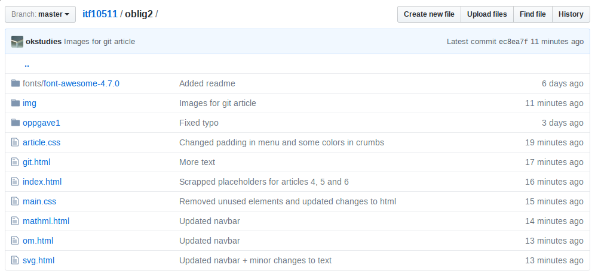

Git
Git er et nyttig verktøy for versjon kontroll som ble utviklet av Linus Torvalds, samme person som har utviklet linuxkjernen. Det har i dag en antatt markedsandel på rundt 42% blant utviklere.
Verktøyet ble utviklet som et resultat av at versjonskontrollsystemet BitKeeper sluttet å gi ut gratis-lisenser. BitKeeper ble brukt i utviklingen av linux, men da de begynte å ta penger for bruk av programmet måtte de finne på noe annet.
Med erfaringen fra BitKeeper begynte Linus Torvalds og andre personer i miljøet rundt utviklingen av Linux å utvikle Git.
De hadde følgende krav for et nytt system:
- Det skulle være raskt
- Simpelt design (merk: simpelt betyr ikke nødvendigvis intuitivt).
- God støtte for ikke-lineær utvikling (kjent som branching).
- Fullt distribuert. Det vil si åpent for allmenheten og fri programvare.
- Effektiv og raskt ved bruk i større prosjekter som for eksempel linuxkjernen.
Git i seg selv kommer uten noe grafisk brukergrensesnitt og er designet for å brukes i terminalen. Det finnes heldigvis noen git-klienter som har et brukergrensesnitt, men de er ofte mindre fleksible enn å bruke terminalen.
Eksempler på klienter med et brukergrensesnitt er GitHub Desktop og GitKraken.
Personlig foretrekker jeg terminalen fordi jeg finner det mer effektivt å bruke tastaturet over mus.
Selv om git kan virke avstøtende og komplisert trenger man ikke nødvendigvis å kunne alle kommandoene for å bruke git.
Essensielle kommandoer:
- git init - Lager et nytt repository
- git clone - Kloner et annet repository både lokalt og eksternt
- git add - Legger til filer i staging
- git diff <fil> - Viser endringer i gitt fil i staging area og i HEAD
- git commit -m "Commit beskrivelse" - Importerer filene fra staging til repositoriet
- git push origin master - Sender filene til et ekstern repository (f.eks ditt repository på github)
- git pull - Henter ned filene fra det eksterne repositoriet.
Det finnes forskjellige stadier/steder i repositoriet ditt.
Forskjellige stadier
- Untracked files
- Filene som ikke har blitt lagt til i repositoriet enda
- Modified files
- Filene som har blitt lagt til i repositoriet, men som har blitt endret på etter siste commit
- Staging area
- Filene som har blitt lagt til og har nytt innhold, men som ikke har blitt committed enda
- HEAD
- Her ligger filene i siste commmit
Slik ser det ut i terminalen:
[På kanten]$ ~/github/itf10511: git log --log-size --max-count=3
commit ec8ea7f63f75babd80e6ca716d06c7c0c7958aeb
log size 101
Author: O.K <redacted@example.com>
Date: Mon Oct 9 07:22:26 2017 +0200
Images for git article
commit 3c3d5a4dd56b758e846adb25946e73f91e7e0c8b
log size 117
Author: O.K <redacted@example.com>
Date: Mon Oct 9 07:20:43 2017 +0200
Updated navbar + minor changes to text
commit fc66da778f04678bb6d943bd8634562437b069a3
log size 93
Author: O.K <redacted@example.com>
Date: Mon Oct 9 07:20:23 2017 +0200
Updated navbar
[På kanten]$ ~/github/itf10511: scrot -u
Mine tre siste commits
[På kanten]$ ~/github/itf10511: git status
On branch master
Your branch is ahead of 'origin/master' by 1 commit.
(use "git push" to publish your local commits)
Changes to be committed:
(use "git reset HEAD "<file>..." to unstage)
new file: oblig2/git.html
Changes not staged for commit:
(use "git add <file>..." to update what will be committed)
(use "git checkout -- <file>..." to discard changes in working directory)
modified: oblig2/index.html
Untracked files:
(use "git add <file>..." to include what will be committed)
oblig2/img/commitsgithub.png
oblig2/img/gitexample.png
[På kanten]$ ~/github/itf10511: scrot -u
Her ser vi tre av de forskjellige stadiene
GitHub
GitHub er et nettsted og en tjeneste hvor man kan oppbevare, samt dele med andre, sine git repositories. Det er veldig populært blant open-source entusiaster, men også utviklere generelt.
Tjenesten gjør det enkelt å samarbeide med andre, da man enkelt kan gjøre endringer på prosjekter andre har lagt ut og foreslå en endring ved å bruke git for å hente ned og sende opp endringer. Det er også mulig å opprette private repositories som gjør at prosjektet og eventuelt programkoden din ikke ligger ute offentlig på internett.
Tilsvarende commits på github
Repositoriet for denne oppgaven på github